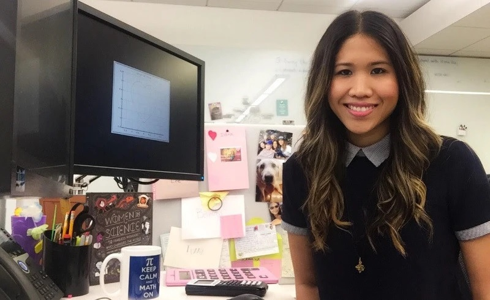

Life and Career
Childhood and school years
15 years old. In fact in this age I failed my math class. It was the first and only class I have ever failed in my life. Until this moment I did very great at school and always had the best grades. So this failed math class was something new and had a big impact on my self confidence. I felt that I'm not as good at math as everyone else in the class. You know, you're always comparing yourself to others. Sometimes it can be really discouraging. At that age I felt like I never wanted to do math again. I felt like it wasn’t something for me. Nevertheless I continued to study hard at school. Luckily I had some really great teachers who explained the material in an interesting and encouraging way. I felt that these teachers cared about me. They saw that I had potencial. They were always giving me encouraging words, because maybe they could tell that I was not confident. And I think it’s very important for teachers to do that, to support their students.

College life
When I went to college I didn’t want what I wanted to major in. I spent a year and a half undecided. Which means that I just took all the required classes to get my degree in a bunch of different areas. As I studied great at school I actually got a college credit for the class that I took for math. That means that I didn’t have to take math class in my first and a half year. I guess at some point I really missed taking my math class and I realised that it was where my interest is. So I decided to go for it. Not having math classes made me realise that I wanted to major in math.
In university I really liked the course of modern algebra. It's also called abstract algebra. It was very interesting. It seemed like it was a different kind of math. Usually when people think about math they think about numbers and data and theory, but math is a lot about problem solving, patterns and the study of changes. So I found this course very interesting. We were not just doing some calculations, but we solved real problems.